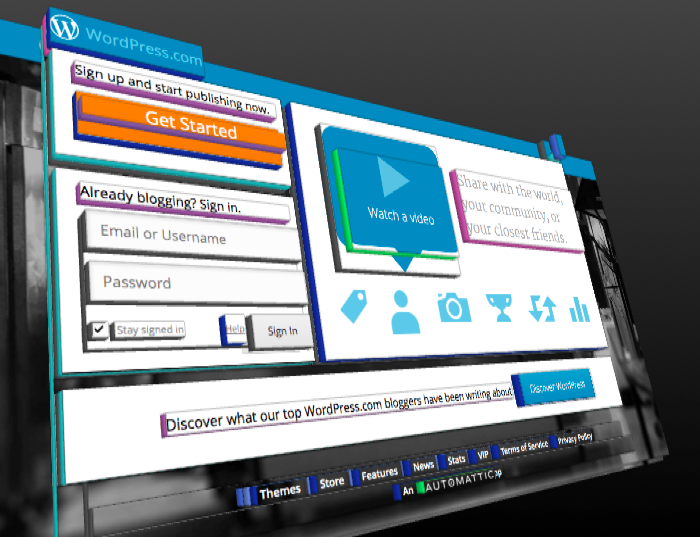

Node Wonder is a content management system that will allow people to create powerful websites without programming experience. The fundamental idea is that a webpage is not unique but rather a concatenation of many smaller components. Within Node Wonder these components are called "widgets". With powerful, configurable, and reusable widgets, a user can create pages quickly by building directly on the works of others rather than "reinventing the wheel".
Node Wonder comes with many predefined widgets that can be combined to create pages (see next section for some examples). Software developers wanting additional features not available through these widgets can create their own and then share their widgets with others. HTML is alreadly hierarchical by nature. Shown below is the site WordPress.com with the nesting shown through a 3rd dimension. Node Wonder separates each of these parts of a webpage into their own widget so that it can be reused easily.

A widget is something which shows content on the screen or affects the layout. Every widget has the following properties:
| Property | Example | Description |
|---|---|---|
| identifier | dL6rnuBk | An 8-digit identifier for the widget. This must be unique across the site, thus these ids are randomly generated. |
| type | video | The type of widget |
| slots* | {
"left": [
"IjBt8zWW",
"wWtG2heL"
], | A javascript object where the keys are names of a slot and the values are arrays of widget identifiers that are within that slot. See "What is a slot?" for more info about slots. |
| settings* | {
"text": "Hello World"
} | A javascript object of configuration specified by the user. The keys used in this object are specific to the widget type. |
| Property Name | Description |
|---|---|
| init | Code to be run on server startup. This will only be called once and then each time the server is restarted. |
| Constructor(settings,id) | Perform simple tasks. Note: Must accept an empty settings object without crashing. |
| settings | Specify model describing data accepted as input by the widget |
| slots | Declare slots in which the user can insert child widgets |
| slot_tags | Specify which types of widgets can be assigned to each slot. Return an object with keys of zone names and values of arrays of tag names. |
| load(callback) | Perform any time consuming operations required to display the widget. |
| children(callback) | Declare any sub-widgets and which slots to insert them into. |
| processData(raw_data) | Given the raw_data from a form post operation convert to a friendly value. |
| validateData(processed_data) | Return false if the data is vaild. Otherwise return true or a string describing the error. |
| wrapper | Specify the html element to be used to contain the widget. Default: "div". The value "none" has the special meaning that no container element will be used. |
| wrapper_class | Additional classes to be added to the wrapper element. |
| head | Returns an array of HTML elements to be inserted into the head of the document. Each element is checked to avoid inserting duplicates into a page. |
| script | Custom javascipt code to be executed. The code will run on page load. |
| deps | External dependencies requiered. Specified in a javascript object where the keys are bower repositories and the values is an array of files to include. |
| toHTML(slots, value) | Produce the HTML to be inserted into the page. |
| save(values) | Process the values from a form. |
| action |
| event |
| field_edit |
| field_view |
| view |
A page is the conceptual representation of a specific page of a website. A page is generally associated with a specific URL and the content of the pages should be shown to the user when they navigate to that URL.
A page in Node Wonder has the following two components